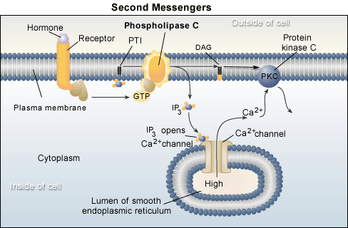

The Biology Project > Cell Biology > Cell Signaling > Problem Set
Cell Signaling Problem Set
Problem 7: Second Messengers
Tutorial to help answer the question
Sending a signal through the cell membrane can lead to the production of second messengers inside the cell. Which of the following can serve as second messengers?
A. cAMP B. Ca++ C. IP3 D. NO (nitric oxide) E. all of the above Tutorial
Second Messengers inside the cell
Many different kinds of molecules can serve as second messengers. The signal, or ligand, binding to a membrane receptor leads to the production of second messengers inside the cell. The original signal usually doesn't enter the cell. The small molecule "cAMP" was the initial second messenger to be identified. Other examples of second messengers include NO, IP3, and DAG. The figure below shows an example of the production of second messengers.

The figure depicts a system where the signal causes a G-protein to become active,stimulating the membrane enzyme phospholipase C. This enzyme degrades cell membrane phosphatidyl inositol releasing IP3 (inositol triphosphate) and leaving diacyl glycerol (glycerol with two fatty acids, DAG). Both are second messengers, with IP3 causing the endoplasmic reticulum to release Ca++ (also a second messenger). The DAG activates protein kinase C, a kinase that is dependent on Ca++ for activity. Note that both second messengers play a role in the activation of protein kinase C. The response made by the cell will depend on what targets for protein kinase C are available
The Biology Project > Cell Biology > Cell Signaling > Problem Set
Department of Biochemistry and Molecular Biophysics
University of Arizona
May 2002
Revised: August 2004
Contact the Development Team
http://biology.arizona.edu
All contents copyright © 2002-04. All rights reserved.